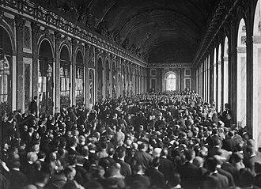

Part II · The Great War · Chapter 5
Inherits: Who started 1914 (ch. 4) · Feeds: China 1911→49 (ch. 7)
Versailles, 1919
In the Hall of Mirrors at Versailles, on 28 June 1919, two German ministers sign a document they had been shown six weeks earlier and were never allowed to argue about out loud. In the same season, in the same suburb, a Chinese delegation asks for the return of Shandong and is refused, and a Japanese delegation asks for one sentence about the equality of races and is refused. Soviet Russia is not invited. What each classroom does with that room is the subject of this chapter.

Every book here says somebody was shut out of Paris. Whose exclusion does your textbook call the injustice?
1 The boring facts
Dry scaffolding. These lines are the ruler; the ladder is the measurement.
- The Paris Peace Conference opens on 18 January 1919. Around thirty delegations attend; the decisions are taken by a Council of Ten, then a Council of Four (United States, Britain, France, Italy), then in practice by three men after the Italian premier walks out in April over Fiume and returns in May.
- The Treaty of Versailles is signed on 28 June 1919, five years to the day after Sarajevo. Separate treaties follow with Austria (Saint-Germain, 10 September 1919), Bulgaria (Neuilly, 27 November 1919), Hungary (Trianon, 4 June 1920) and the Ottoman Empire (Sèvres, 10 August 1920, replaced by Lausanne in 1923).
- Article 231 of the treaty affirms the responsibility of Germany and her allies for the loss and damage caused by their aggression. The total bill is not in the treaty; a Reparation Commission fixes it in 1921 at 132 billion gold marks, about £6,600 million.
- Germany’s army is capped at 100,000 men, conscription abolished, the Rhineland demilitarised and its left bank occupied. Germany loses roughly an eighth of its European territory and all of its colonies.
- Germany’s colonies and the Arab provinces of the Ottoman Empire are not annexed but distributed as League of Nations mandates under Article 22 of the League Covenant. The Middle Eastern allocations are settled at the San Remo conference, 19–26 April 1920.
- Soviet Russia is not invited, and Allied troops are on Russian soil while the conference sits. A delegation from the Hejaz led by Emir Faisal puts the Arab case to the Council of Ten in February 1919.
- China attends as a victor. Articles 156–158 transfer Germany’s Shandong rights to Japan; the Chinese delegation does not sign. On 4 May 1919 students demonstrate in Beijing. Japan holds Shandong until 1922.
- The United States Senate refuses consent to the treaty, decisively in March 1920. The United States never joins the League of Nations and makes a separate peace with Germany in 1921.
2 The ladder
Eight narrators who cover 1919, ordered by whose grievance the page is built around — from books whose aggrieved party was inside the palace but outside the room, out to the book where the palace is a place name and the aggrieved party is a continent’s worth of people who were never candidates. Ukraine’s volume begins in 1945 and Germany’s is a National Socialism booklet; both are in the receipts with their search stems. Kazakhstan’s book is a national history and is never a world-event column here.
| Classroom | Who was shut out | One-line tag |
|---|---|---|
| UK · Lowe 2013 |
“The Germans were not allowed into the discussions at Versailles; they were simply presented with the terms and told to sign. Although they were allowed to criticize the treaty in writing, all their criticisms were ignored except one.” |
Germany, as plaintiff with a numbered case |
| BY · Кошелев 2021 |
«Согласно Версальскому мирному договору, подписанному с Германией 28 июня 1919 г., вся ответственность за войну, разрушения и экономические потери была возложена на Германию.» “According to the Versailles Peace Treaty, signed with Germany on 28 June 1919, all responsibility for the war, the destruction and the economic losses was placed upon Germany.” |
Germany, and the verdict runs to 1933 |
| IT · Sabbatucci–Vidotto 2004 |
«…l’esigenza di punire in qualche modo gli sconfitti – considerati i responsabili della guerra e non rappresentati alla conferenza…» “…the requirement of punishing the defeated in some way — considered the ones responsible for the war and not represented at the conference…” |
The defeated, and Russia in a parenthesis |
| RU · Чубарьян 2023 |
«Советская Россия не была представлена на Парижской мирной конференции и не только была отстранена от создания системы послевоенного мирного устройства, но и стала объектом интервенции западных держав.» “Soviet Russia was not represented at the Paris Peace Conference and was not only removed from the creation of the system of the post-war peace settlement, but also became an object of intervention by the Western powers.” |
Three exclusions in one section |
| US · OpenStax 2022 |
“Japan had requested a clause affirming the equality of all nations regardless of race… Several powers supported its inclusion, but Australia (which allowed no non-White immigration) and then the United States stated their opposition. Wilson claimed a unanimous vote was necessary to include it, though this was not true for any other clause.” |
The widest cast, its own state named |
| IN · NCERT 2022+ |
“On 4 May 1919, an angry demonstration was held in Beijing to protest against the decisions of the post-war peace conference. Despite being an ally of the victorious side led by Britain, China did not get back the territories seized from it. The protest became a movement.” Themes in World History, Class XI · “Paths to Modernisation,” p. 168 — the entire 1919 settlement in this volume |
China only; the conference has no name |
| CN · 纲要 上 2019 |
巴黎和会上，强权战胜了公理，中国遭遇严重外交失败，这引发了爱国青年的极大愤慨。 “At the Paris Peace Conference, power triumphed over justice, and China suffered a serious diplomatic defeat; this provoked enormous indignation among patriotic youth.” |
China only; the treaty has no name |
| SD · MoE 2009 |
«…وهو المبدأ الذي تمسكت به الشعوب العربية في مطالبتها بالاستقلال.» “…and it is the principle to which the Arab peoples clung in their demand for independence.” |
The Arab world; Germany never appears |
3 The tell
Nobody on this ladder pretends the conference was open. Every one of the eight books contains a sentence about a door being closed. What changes from column to column is who is standing on the wrong side of it — and the sentence that carries the exclusion is often the same sentence, with a different nation dropped into the slot.
Watch the slot. Lowe: “The Germans were not allowed into the discussions at Versailles.” Sabbatucci–Vidotto: the defeated, “considered the ones responsible for the war and not represented at the conference.” Chubaryan: “Soviet Russia was not represented at the Paris Peace Conference.” Three books, one grammatical position, three different occupants — and the Russian sentence is not about Germany at all. Sabbatucci–Vidotto holds both readings at once and grades them: the defeated get a clause in the main argument, the socialist Republic gets a parenthesis three pages later. A bracket is a measurement.
Lowe’s architecture is the clearest thing in the corpus, and it is a courtroom. Section 2.8 lists the terms as six numbered points, then asks a question — “Why did the Germans object, and how far were their objections justified?” — and answers it in seven numbered charges, each with a British verdict attached: “Some historians feel that the Germans were justified”; “This is probably not a valid objection”; “The Germans clearly did have some grounds for complaint.” It is the only book here that stages 1919 as a case with a plaintiff, and the plaintiff is Germany. The German word for the complaint is handled with tongs: Lowe puts ‘Diktat’ in quotation marks and hands it to Hitler — the argument “much used by Hitler, that because the peace was a ‘Diktat’, it should not be morally binding” — then supplies the counter-charge, that the Germans “could scarcely have expected any better treatment after the harsh way they had dealt with the Russians at Brest–Litovsk – also a ‘Diktat’.” Sabbatucci–Vidotto uses the same word with no gloves on and in its own voice: the treaty “was a true and proper imposition (a Diktat, as it was then defined with a German term), suffered under the threat of military occupation and of the economic blockade.” One classroom quotes the word; the other means it.
The money sorts the books the same way and faster. Lowe prints two figures and lets them fight: reparations announced in 1921 as £6,600 million, and Keynes — “an economic adviser to the British delegation at the conference” — urging “£2000 million, which he said was a more reasonable amount.” OpenStax prints one figure, converted for its own students: “over $30 billion in 1919 dollars.” Sabbatucci–Vidotto prints 132 billion gold marks, “frightening for those times,” thirty-eight pages later, in the chapter on the Weimar Republic. Chubaryan prints no number at all in the section, only a passive verb — the total sum “was determined” — and Koshelev prints no number anywhere near the treaty. The bill is a British and American object. In two of the classrooms on this ladder a student could leave the topic without ever seeing what Germany was asked to pay.
Then there is the arithmetic of the men at the front. Koshelev: the tone in Paris “was set by” Wilson, Lloyd George and Clemenceau, “known as the ‘Big Three’.” Lowe’s photograph caption: “The three leaders at Versailles: (left to right) Clemenceau, Wilson and Lloyd George.” Chubaryan: the main active figures were Wilson, Lloyd George, Clemenceau and Orlando, “dubbed ‘the Big Four’” — and Chubaryan’s own photograph caption lists four names. Sabbatucci–Vidotto keeps Orlando in the group and takes his significance back inside the same bracket: he was there “though figuring nominally among the ‘four great ones’, in reality he played a marginal role.” Both counts are defensible history — the Council of Four ran the conference, and for two weeks in the spring it ran with three chairs. What the books have done is choose a crop. The Italian manual is the only one that can see the seam, because Italy is the man in the fourth chair.
One phrase in that manual does something none of the other seven books do. Its section on the German settlement carries the running head «L’umiliazione della Germania», and forty pages on, the Weimar Republic is “indissolubly associated with defeat, with the humiliation of Versailles.” Then, a hundred and twenty pages later, in the chapter on China, the same running head reappears — «L’umiliazione di Versailles» — and this time the humiliated party is China, sacrificed by the Western powers, “which recognised Japan’s right to succeed defeated Germany in the economic control of the region of Shantung.” Same noun, same treaty, two owners, one book. It is the nearest thing in this corpus to a textbook admitting that the question this chapter asks has more than one answer.
“In January 1919, the victor nations of the First World War convened a ‘peace conference’ in Paris, France; China attended the conference as one of the victor nations.”
CN · 中外历史纲要 上 (2019) · 第21课, printed p. 137 — the quotation marks are the textbook’s ownThe Chinese volume answers the question by refusing the vocabulary. Search it: 凡尔赛 — Versailles — appears zero times in the volume. The instrument China declines to sign is 和约, “the peace treaty,” unnamed. The conference is 巴黎和会 when it is being described and “和平会议” — in quotation marks — at the moment it convenes. The verb that hands Shandong to Japan carries 竟, an adverb of outrage: they went so far as to decide. And 赔款, the word for an indemnity, occurs throughout the volume attached to Nanjing, Beijing, Shimonoseki and the Boxer settlement — money China pays. Not once is it money Germany pays. In this classroom 1919 is not a treaty with a name; it is the year the century of unequal treaties produced one more, this time from an ally, and the sentence a student memorises is 强权战胜了公理 — power triumphed over justice. The League of Nations gets a single mention in the volume, twelve years later, sending the Lytton Commission to Manchuria.
NCERT does the same thing in one third of the words and without a hint of grievance in the voice. Three sentences, no treaty, no Wilson, no Clemenceau, no sum, no League — the whole 1919 settlement in this volume is “the decisions of the post-war peace conference,” agentless and abstract, followed by the line that carries the load: “Despite being an ally of the victorious side led by Britain, China did not get back the territories seized from it.” Led by Britain. An Indian textbook describing a Chinese grievance selects, out of all the available nouns, the empire that governed India. Nothing further is said. Nothing further needs to be.
“Discuss this idea with your classmates, setting out your opinion of it and supporting it with arguments.”
SD · التاريخ للصف الثالث (2009) · the activity printed directly under the definition of the mandate system, p. 189The Sudanese book is the one column where Versailles is a place and not a document. “After the end of the war the European states called one another to Versailles in Paris in France to hold the Peace Conference of 1919.” Germany is not on these two pages at all — no Article 231, no reparations, no hundred thousand men. What arrives at Paris is Wilson, “who brought with him his Fourteen Principles for the sake of guaranteeing world peace, the most important of which was the principle calling for giving colonised peoples the right of self-determination — and it is the principle to which the Arab peoples clung in their demand for independence.” Then Britain, France and Italy “clung to their colonial interests in the Middle East while attempting to reconcile them with Wilson’s liberationist principles,” San Remo divides the region, and the chapter’s verdict is a single image: “a new link in the chain of colonialism.” The book then prints the mandate’s own justification in the mandate’s own words — a system “devised by cunning English politicians such as Lord Smuts and Lord Lugard,” summed up as “assigning responsibility for governing the backward states to the civilised states for a period of time, so as to take them by the hand on the path of progress” — and hands it to the class to argue with. This is the second time in this book that the Sudanese syllabus has given a student the naming problem as homework rather than the answer.
Put Lowe next to that. He does cover the Arabs, in the section on Turkey: “These were peopled largely by Arabs, who had been hoping for independence as a reward after their brave struggle, led by an English officer, T. E. Lawrence (Lawrence of Arabia), against the Turks.” The struggle is Arab, the adjective is generous, and the leadership is English. The same book, on the same settlement, is willing to strip the varnish off the mechanism when the property is German: the mandate arrangement “was really a device by which the Allies seized the colonies without actually admitting that they were being annexed.” Chubaryan reaches the identical verdict in a harsher register — the conference “demonstrated, through the system of mandates, the division of colonial booty traditional for imperialist predators” — and Koshelev reaches the fact with no verdict and no subject at all: “Syria, Lebanon, Iraq and Palestine, which had belonged to Turkey, were transferred as mandated territories to England and France.” Four countries change hands in a sentence with no one in it. Thirty-four pages later, in a different chapter, the same book supplies the verdict it withheld here — the mandate system was proposed “with the aim of legitimising the colonies of Germany seized by them” — and then closes that chapter by setting the class an exercise: define “mandate,” and explain why Lloyd George called mandates “simply a disguise for annexations.”
Which leaves the paragraph only one classroom prints. On page 51 of the Russian volume, between the Fourteen Points and the terms imposed on Germany, four lines report that “in the hope of taking part in the resolution of colonial problems, representatives of a number of colonial and dependent countries of the East also arrived in France,” and that they “were not granted the attention of the conference participants, and left Paris disappointed.” They have no names, no countries and no delegations; they arrive, they are ignored, they go. It is the smallest scene on this ladder and the only one in which the excluded are shown physically present, in the building, being not-attended-to. OpenStax gets closest to it from the other direction, and pays for the honesty with its own flag: the racial-equality clause was killed by “Australia… and then the United States,” and the Allied tally of the war’s destruction “did not include African lives lost in the fighting in Africa.” Between them, the Russian volume and the American one have put on the page the people Paris did not count. Neither book joins its own sentence to the other’s. Nobody here writes the conference as one room with everybody’s absence in it.
4 The thread
OpenStax is the only book here that measures the treaty, and it does it in someone else’s words: the Treaty of Versailles was “a ‘massive document that ran to 436 pages containing 433 articles organized into fifteen parts.’” Fifteen. Every column on this ladder teaches four of them — territory, army, guilt, money. Two of the fifteen are still in the reader’s life, and neither is one of the four.
Take the thirteenth first. Thirty pages past its own settlement section, Sabbatucci–Vidotto notices something and then explains it without the treaty. The workers of 1919 won “the reduction of the working day to eight hours daily at equal wage: an objective that for thirty years had figured in first place in the programmes of the socialist movement and that was reached almost simultaneously, immediately after the end of the war, in all the principal European States.” The manual credits the strikes and the fear of “doing as in Russia,” which is correct, and never mentions that the treaty it described thirty pages earlier contains an entire part about the length of a working day.
Part XIII, Articles 387–427, opens with a warning rather than a clause: conditions of labour produce “unrest so great that the peace and harmony of the world are imperilled,” and peace “can be established only if it is based upon social justice.” That was drafted in the year of the Berlin risings, the Hungarian Soviet Republic and the Italian biennio rosso, with one chair in the room deliberately empty. The forty-one articles create the International Labour Organization — the one body founded at Paris that seats governments, employers and trade unions at the same table — and its first conference, Washington, autumn 1919, adopts Convention No. 1: eight hours a day, forty-eight a week. Then the rest of the document came apart, and the League it founded expired without ceremony. Part XIII did not. It moved into the United Nations as a specialised agency in 1946, took the Nobel Peace Prize in 1969, and is still in Geneva writing standards.
Be exact about what that produced. Part XIII did not give anyone the eight-hour day; the strikes of 1918–19 did, and the Italian manual is right about it, which is why the simultaneity is in its sentence at all. What the thirteenth part produced was the standard — the machinery that turned a concession won under pressure in a few European capitals into a treaty obligation with a number on it, portable to places where nobody had struck — and the institution still issuing them. The strikes won the hours. The treaty made them a rule.
Which is where the reader is standing, on a Tuesday. The eight-hour day, and the weekend on the far side of it, is a term of the settlement this chapter is about: the oldest clause of it still in force, written into the labour code of every country on this ladder and, for most readers, into their own contract. Whatever else 1919 imposed and on whom, this is the part of it everybody is inside.
The second survival is one word, and the Sudanese book names the men who chose it. The mandate, it tells a class in Khartoum, is «والانتداب نظام ابتدعه دهاة الساسة الإنجليز أمثال لورد سمتز ولورد لوقارد» — “a system devised by cunning English politicians such as Lord Smuts and Lord Lugard.” Smuts was neither English nor a lord, but the book has the right man. Wilson had committed the conference to no annexations, and in December 1918 it was Jan Smuts who proposed holding the conquered territories under a Roman legal term instead — mandatum, a trust discharged without payment. Article 22 of the Covenant, which is Part I of the same treaty, put it in the vocabulary of the century: the well-being of these peoples “forms a sacred trust of civilisation.” The territories were sorted into classes A, B and C by how ready they were said to be, and the classes matched, very nearly, what the Allies had wanted before the war. Chubaryan gives that the harshest name in the corpus — “the division of colonial booty traditional for imperialist predators” — which is what a Russian classroom is taught, not a verdict this book is issuing.
The word seized nothing. It did not create a single colony; every one of those territories was changing hands anyway, and saying the word renamed the transfer is not the same as saying it caused it. What it produced was a vocabulary in which the transfer could be entered as a duty, and a set of lines drawn to fit the vocabulary. In 1946 the mandates were renamed again, into United Nations Trust Territories. The lines were not. Syria and Lebanon were one French mandate and are two states; Iraq and Jordan are British mandate units under later names; the most contested borders in the eastern Mediterranean begin as pencil on the same maps. The manual that noticed the simultaneity had already, in chapter 2, described colonial borders “traced on the geographic map… without taking any account of tribal divisions” and then “destined nevertheless to be preserved” once the colonies became states. This is that sentence again, moved to the Middle East, with a Roman word attached.
Now the count, and it runs opposite ways for the two parts. Zero of eleven classrooms connect the eight-hour day to the Treaty of Versailles. Four print an eight-hour day at all — Italy for Europe in 1919, Lowe for Lenin’s decree, for NEP and for Roosevelt’s NRA, OpenStax for American factory law and the Bolsheviks’ programme, Ukraine’s out-of-scope volume for the occupation of Japan in 1945 — and none of the four is within reach of Paris. One of eleven counts the treaty’s parts, and it is the book that never opens one. Two of eleven name the International Labour Organization anywhere: Lowe, who has it as a League success “under its French socialist director, Albert Thomas,” then in his UN chapter as an outfit that “is still operating today”; and Ukraine, which supplies the only date anyone gives it, “(ILO, founded in 1919),” inside a list of UN agencies. Neither says the treaty made it.
The word does far better. Six of the eleven describe the mandate system, and five of the six tell a student it was covering something: Sudan’s “new link in the chain of colonialism”; Chubaryan’s booty; Lowe’s “device by which the Allies seized the colonies without actually admitting that they were being annexed”; Sabbatucci–Vidotto’s institution that “served to mask the continuation for an indeterminate time of colonial dominion” while containing, in the same breath, an implicit recognition of the right to self-government; and Koshelev, who sets it as homework with Lloyd George’s “disguise for annexations” attached. The sixth is OpenStax, whose glossary is the neutral one. Which is the shape this ends on. The part of the treaty that renamed a map is taught nearly everywhere as a renaming — argued with, quoted, set as an exercise. The part that wrote a rule about a Tuesday is in none of these books at all: not hidden, just retired, the way a thing stops being news once it has worked for a hundred years.

5 Credit where due
Fairness, paid in installments
OpenStax (US) earns the credit line, and it earns it at its own expense. It is the only book on this ladder that widens the cast beyond one grievance and then names its own government as the party that closed the door: the racial-equality clause failed because Australia and “then the United States stated their opposition,” and because Wilson “claimed a unanimous vote was necessary to include it, though this was not true for any other clause.” It notices that Africans were left out of the accounting of the war they died in. It prints four pages later, under the heading “In Their Own Words,” a long passage by the Japanese politician Ōkuma Shigenobu on “the mistaken theory” of white superiority — a primary source chosen to argue against the book’s own country. That is a survey written far from the events, using the distance for something other than comfort.
MoE Sudan (SD) takes the second nod for the move it also made in Chapter 2. It states the mandate system’s justifying sentence in full, in the mandate system’s own vocabulary — backward states, civilised states, taken by the hand toward progress — and then, instead of rebutting it, prints an activity: discuss this idea, give your opinion, support it with arguments. On the page before, it asks students to lay the mandate map over the map of spheres of influence “that were drawn earlier,” which is Sykes–Picot without naming it in the instruction. It is the only column that treats 1919 as an event inside its own region’s history rather than a European chapter with a regional footnote.
Lowe (UK) is the depth lead, and depth is not the same prize. No other book gives a student the German case as a case, numbered, with each charge tested and some of them upheld against Britain’s own side. It prints Keynes’s figure against the Allied figure, admits the Allies “admitted their mistake,” and calls the mandate a device for annexing without saying so. It is also the book whose Arabs need an English officer to lead them. Both of those are on the same settlement, twenty pages apart, and a reader should hold them together.
6 Where this stops being true
Limits
This ladder is eight pinned editions, not eight countries and not eleven narrators. Every in-scope book in the corpus covers 1919 — eight of eight — so there is no avoidance signal here and no signature topic either. Ukraine’s volume runs 1945–2018 and Germany’s is a National Socialism booklet; those two zeros are syllabus boundaries, and their search stems are in the receipts.
The Sudanese lines are the weakest evidence in this chapter and are marked accordingly. That PDF’s Arabic extraction is ligature-mangled — letters decompose and reorder, so the strings cannot be searched or copied — and every Arabic quotation above has been reconstructed to standard orthography from the mangled page, with a machine translation used only for discovery. All of them must be read against the printed page before this chapter ships. Sudanese page numbers here are printed-page numbers, eight less than the PDF’s. One reconstruction is genuinely uncertain: the extraction places a comma inside the phrase “the right of self-determination,” which is probably a typesetting artefact but could be a comma in the printed book.
Kept verbatim, because errors are data. The Sudanese page dates the San Remo conference twice, in adjacent sentences: “Wilson’s principles also called for the holding of the San Remo conference, 16 April 1916,” and then, as a heading, “San Remo Conference, 16 April 1920.” The conference met 19–26 April 1920, and it was not called for by Wilson’s principles. The same page repeats one sentence — that the peace conference split into a number of sub-conferences — twice, four lines apart. And the mandate system is credited to “Lord Smuts and Lord Lugard”: Frederick Lugard was indeed a British peer, but Jan Smuts was South African and never a lord.
A second keep, and this one repays a second look. The Sudanese table of mandates lists Egypt, Sudan, Transjordan, Palestine and Iraq as British mandates; Syria, Lebanon and Morocco as French; Libya, Eritrea and Italian Somaliland as Italian; and Algeria and Tunisia in the French column. Most of those were never League mandates — Egypt was a protectorate and then a nominally independent kingdom, Sudan an Anglo-Egyptian condominium, Algeria was administered as part of France, Libya and Eritrea were Italian colonies. But the book has pre-empted the objection in the paragraph beneath the table: the Arab states fell under the colonisation of the powers shown “with a difference in the names — mandate, protectorate, trusteeship and so on — except that the content of colonialism remains one.” That is an argument, not a slip, and it should be read as one.
Two attributions need care. Koshelev’s sharpest line on the treaty — “In order to destroy Germany the treaty was too soft; in order to punish it, too humiliating” — is not the textbook’s own voice. It is a boxed extract from the Russian historian A. I. Patrushev, printed with a question attached for the student to answer, and it belongs in a different evidentiary class from the running text. Chubaryan’s “Big Four” and Koshelev’s “Big Three” are both correct descriptions of different moments, not a contradiction to be scored.
Page conventions differ by book and are cited as found. Russian and Belarusian printed pages are one less than the PDF’s; Chinese printed pages are four less. The Lowe extraction carries no printed page numbers, so PDF pages are given with the section number, which is the durable reference in that book. Italian and OpenStax page numbers are the ones printed in the extraction.
Finally, none of these books is a history of the conference. There are no delegate diaries here, no committee minutes, no King–Crane Commission, no Ho Chi Minh at the Hotel Crillon, no Zionist Organization submission, no Korean or Irish petitions. If you want to know what it was like to wait in a Paris hotel in 1919 for a principle to be applied to you, every column on this ladder will leave you unsatisfied — including the four-line Russian paragraph that is the closest any of them comes.
7 Receipts
- UK — Norman Lowe, Mastering Modern World History, 5th ed. (Palgrave Macmillan 2013): §2.7 “The problems of making a peace settlement,” PDF pp. 66–67 (Illustration 2.1, “The three leaders at Versailles,” p. 67); §2.8 terms and German objections, pp. 68–73 (War Guilt clause and £6,600 million p. 68; “not allowed into the discussions” and ‘Diktat’ p. 69; mandates as “a device” p. 70; Keynes and £2,000 million p. 73); §2.10 Sèvres and the Arab mandates, p. 75; §2.11 verdict, p. 76.
- BY — В. С. Кошелев и др., Всемирная история, 11 кл. (БГУ 2021), § 13 “Версальско-Вашингтонская система международных отношений”: key idea and the “Big Three” p. 97; Clemenceau on the 14 points and the 10 commandments p. 98; all responsibility placed upon Germany, Germany loses ⅛ of its territory, Syria/Lebanon/Iraq/Palestine “were transferred” p. 99; humiliating peace → revanchism → fascism, and the Patrushev extract, p. 103. no figure reparations sum, anywhere in the section.
- IT — G. Sabbatucci & V. Vidotto, Il mondo contemporaneo (Laterza 2004), § 13.12 “I trattati di pace e la nuova carta d’Europa,” pp. 295–299: the defeated “not represented” p. 295; the “four great ones” and Orlando’s marginal role, and the Diktat, p. 296; the socialist Republic in parenthesis, and eight new states, p. 298. Reparations of 132 billion gold marks, Weimar chapter, p. 334. “L’umiliazione di Versailles” as a running head over China, § 20.5, pp. 455–456.
- RU — А. О. Чубарьян, Всеобщая история. Новейшая история 1914–1945 гг., 10 кл. (Просвещение 2023), § 6: conference opens 18 January 1919, the “Big Four,” the 14 Points as an answer to Soviet Russia’s call for a democratic peace, the delegations from the East who left disappointed, and the peace terms “predatory and humiliating,” p. 51; Article 231 and the reparations total “determined,” p. 52; “Fragility of the Versailles system,” the time bomb, the “yoke of Versailles,” Soviet Russia not represented, and the “division of colonial booty,” p. 54.
- US — OpenStax, World History, Volume 2: from 1400 (2022), ch. 12 “The Interwar Period”: “(except Russia)” p. 476; the Fourteen Points p. 477; reparations “over $30 billion in 1919 dollars,” Shandong without consulting the Chinese, the racial-equality clause, African lives not tallied, and the “war guilt” clause, all p. 479; May Fourth p. 480; Ōkuma Shigenobu, Illusions of the White Race, “In Their Own Words,” p. 484.
- IN — NCERT, Themes in World History, Class XI (post-2022 rationalized): the whole settlement, three sentences, p. 168; timeline entry “1919 May Fourth Movement,” p. 170. 0 mentions Versailles · reparations · League of Nations · Fourteen Points · Shandong — searched across the volume.
- CN — 《中外历史纲要 上》 (2019), 第21课「五四运动与中国共产党的诞生」: unit lede, printed p. 136; “power triumphed over justice,” the “peace conference” in quotation marks, the transfer of Shandong, the 3,000 students of 4 May, the Shanghai strikes of 3 June, and the delegates’ refusal to sign, printed p. 137 (PDF p. 141); timeline entry «1919 年 5 月 4 日 · 五四爱国运动爆发», printed p. 210. 0 mentions 凡尔赛 (Versailles) in 217 pages. 1 mention 国际联盟 (League of Nations) — the Lytton Commission, 1932.
- SD — وزارة التربية والتعليم, التاريخ للصف الثالث (Khartoum 2009): Peace Conference 1919, Wilson’s Fourteen Principles, San Remo, the definition of the mandate and the activity, printed p. 189; the mandate table and “from the Ocean to the Gulf,” printed p. 190; “Peace Conference (Versailles)” in the unit date-table, printed p. 191. Printed pages = PDF pages − 8. 0 mentions Germany, reparations, Article 231, war guilt — on the peace-conference pages.
- out of scope · stems searched UA — Гісем/Мартинюк, Всесвітня історія, 11 кл. (2019), syllabus 1945–2018: Версал- 0 · репарац- 0 · Ліг- Націй 0 (the only “Ліга” hits are the Lega Nord and the Arab League) · Чотирнадцят- 0 · Паризьк- 1, and it is the Paris agreement on Vietnam, 1973.
- out of scope · stems searched DE — bpb Informationen zur politischen Bildung Nr. 316, «Nationalsozialismus: Krieg und Holocaust» (2012), syllabus 1939–1945 and the reckoning: Friedenskonferenz 0 · Reparation 0 · Kriegsschuld 0 · Völkerbund 4 (all of them Germany leaving it) · Versailler 10, every one of them a provision the National Socialist state revised. The booklet’s single evaluative phrase on the settlement is on p. 5 — the European powers kept their illusions about German policy so long because of «den einseitigen Bestimmungen des Versailler Friedensvertrages von 1919», “the one-sided provisions of the Versailles peace treaty of 1919,” whose partial revision was by then regarded in London and Washington as a legitimate German claim. The one book in this corpus written from inside the country the treaty was imposed on spends its one sentence on 1919 explaining appeasement.
- not a column KZ — national-history genre; never a peer column in a world-event ladder in this book.
Now look up what your textbook calls it.